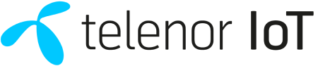

Define use case
Capture vertical, geography, scale, and operating constraints.
ECOSYSTEM
ZENCROSS™ is not just a partner list. It is a coordinated IoT system with defined roles across the full deployment stack.
POSITIONING
ZENCROSS coordinates the ecosystem and engagement so buyers do not need to stitch together disconnected vendors, stack layers, and regional decisions.
The goal is simple: reduce deal friction, clarify who does what, and make the deployment path feel accountable from the start.
HOW IT WORKS
Capture vertical, geography, scale, and operating constraints.
Map modules, connectivity, eSIM, platform, and cloud requirements.
Bring the right ecosystem roles together before deployment starts.
Move from feasibility to pilot and scale with coordinated support.
PARTNERS AND ROLES
Each partner contributes a specific capability so the buyer sees a working system, not a vendor directory.
Module and ecosystem lead for compact cellular IoT designs.
Trusted eSIM and connectivity identity foundations.
Connectivity management platform for operational control.
Cloud-native edge bridging and device data services.
Global operator reach for cross-market deployments.
Cellular chipset innovation for low-power IoT designs.

Global managed connectivity and deployment support.
Operator expertise for regional deployment requirements.
Operator coverage and global deployment support.
Cloud infrastructure and data services for scalable workloads.
Engineering and product development services.
Systems integration and solution delivery.
WHY IT MATTERS
HOW TO ENGAGE
Start with feasibility and identify which partners, stack layers, and deployment steps fit your use case.